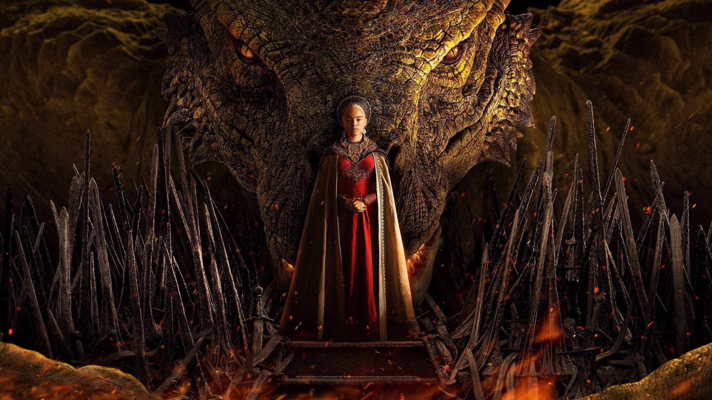
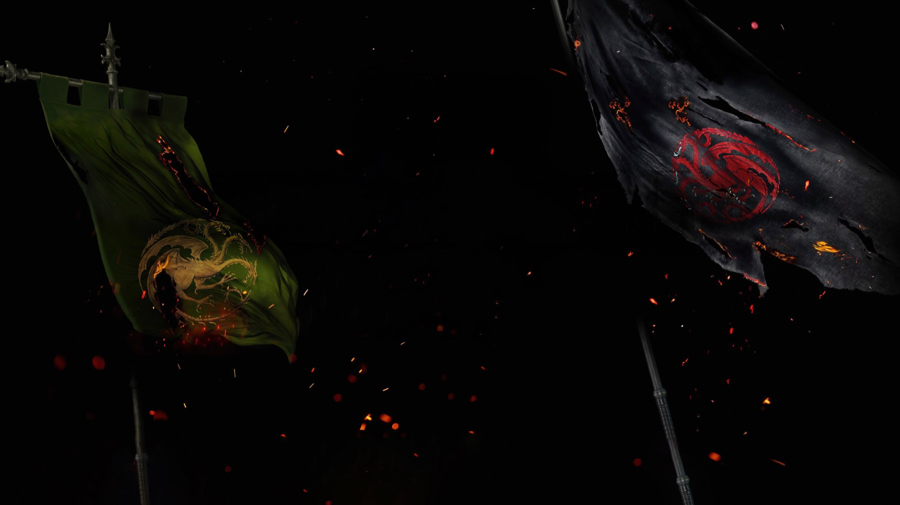
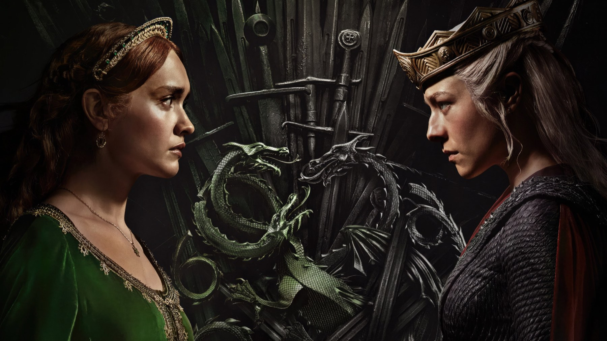

House of the Dragon – Stagione 1
Prima della guerra, una famiglia che si sgretola a tavola. Ecco perché il primo ciclo resta il migliore, nonostante i salti nel tempo
Chi ricorda House of the Dragon per i draghi ricorda la metà sbagliata. Il primo ciclo di episodi è soprattutto la storia di un re buono che non riesce a tenere unita la propria famiglia, e di due ragazze cresciute come amiche che finiscono ai lati opposti del trono. Rivisto oggi, dopo la guerra aperta della terza stagione, ci sembra ancora il più riuscito, perché è l'unico in cui la serie ha un cuore. Però paga un prezzo alto alla fretta con cui brucia gli anni.
Di cosa parla la prima stagione
Siamo circa due secoli prima del Trono di Spade. Re Viserys Targaryen, interpretato da Paddy Considine, non ha un figlio maschio e quindi nomina erede la figlia Rhaenyra, una scelta che metà del regno non accetta. Intorno a lui si muovono il fratello Daemon (Matt Smith), imprevedibile e ambizioso, e Alicent Hightower, amica d'infanzia di Rhaenyra che diventa regina e madre di un possibile rivale. La serie nasce da Fuoco e sangue, il libro di George R.R. Martin uscito nel 2018; Martin l'ha creata con Ryan Condal, che poi l'ha guidata insieme a Miguel Sapochnik.

Due momenti che spiegano la serie
Il primo arriva già nell'episodio d'esordio, diretto da Sapochnik. La regina Aemma è in travaglio, il parto si complica e Viserys autorizza un taglio cesareo: la regina muore, e il bambino tanto atteso le sopravvive solo poche ore. Diversi critici trovarono la sequenza troppo esplicita, ma fissa subito il tema: in questa casa il potere passa attraverso il corpo delle donne, e qualcuno paga sempre il conto.
Il secondo è nell'ottavo episodio, diretto da Geeta Vasant Patel. Viserys, ormai sfigurato dalla malattia, entra nella sala del trono e la attraversa a passi lentissimi, sorretto da Daemon, per sedersi sul Trono di Spade un'ultima volta. Poi, alla cena di famiglia, chiede ai suoi di fare pace, e per qualche minuto Rhaenyra e Alicent brindano l'una all'altra. Sappiamo che non durerà, ed è proprio per questo che la scena fa così male. Considine non alza mai la voce, perché gli basta il corpo che cede: quindi il re più debole della serie diventa il personaggio più forte.
La scena che vale la stagione
È nel finale, The Black Queen, scritto da Condal e diretto da Greg Yaitanes. Rhaenyra, incoronata da poco a Roccia del Drago, ha appena detto: «Non desidero governare un regno di cenere e ossa». Per questo sceglie la diplomazia e manda il figlio Lucerys come ambasciatore a Capo Tempesta, da Lord Borros Baratheon. Lì però c'è Aemond, che lo insegue nella tempesta in groppa a Vhagar. Il piccolo drago Arrax reagisce, e Vhagar lo divora insieme al suo cavaliere mentre Aemond, inorridito, le urla di fermarsi.
Ed ecco il dettaglio che cambia il modo di guardarla. Nel libro di Martin Aemond uccide Lucerys di proposito; la serie invece trasforma l'omicidio in un incidente, un drago che disobbedisce. Una parte della critica americana l'ha letta come un modo per rendere Aemond più umano; David Crow, su Den of Geek, l'ha bocciata, perché toglie al personaggio la responsabilità di ciò che fa. Noi la difendiamo, perché la scelta va oltre Aemond: la guerra civile non comincia con una decisione, ma con un errore che nessuno può più ritirare. È la stessa logica di tutta la stagione, fatta di persone che non vogliono il disastro e lo provocano lo stesso.
Dove inciampa
La storia copre molti anni, con un salto di dieci prima del sesto episodio. Sulla carta è una scelta coraggiosa, perché permette di raccontare una vita intera, ma in pratica spezza l'affetto per i personaggi proprio quando lo avevamo costruito. Milly Alcock ed Emily Carey avevano dato a Rhaenyra e Alicent ragazze una complicità credibile; Emma D'Arcy e Olivia Cooke invece ereditano due donne adulte già nemiche, e quello che è successo nel mezzo ce lo dobbiamo immaginare. Anche Christian Colli, su Multiplayer.it, rimprovera alla serie il passaggio da una generazione all'altra, perché gli attori non sembrano mai davvero invecchiati. Nota inoltre che la seconda metà rallenta, e anche su questo gli diamo ragione.
Sul piano tecnico il difetto è uno solo, ma molti spettatori lo ricordano: il settimo episodio, Driftmark, ha una luce così scura che sugli schermi di casa diverse scene si leggevano a fatica. HBO rispose che era una scelta voluta. Possiamo accettarla come intenzione, ma il risultato resta un episodio che si guarda strizzando gli occhi.

Come sta rispetto alla terza
Quando abbiamo recensito il terzo ciclo abbiamo notato che lì le battaglie sono più spettacolari, ma i personaggi parlano molto e si muovono poco. Qui succede il contrario: ogni conversazione a corte sposta qualcosa, e la morte di Viserys pesa perché abbiamo passato dieci ore con lui. Per questo, anche se i numeri della critica premiano la guerra, noi preferiamo gli episodi che la preparano.
Allora guardiamoli, questi numeri: la prima stagione ha il 90% di recensioni positive su Rotten Tomatoes e 69 su 100 su Metacritic, contro il 91% e circa 75 della terza. Il debutto raccolse 9,99 milioni di spettatori in un giorno, il miglior esordio di sempre per una serie HBO, e quasi 25 milioni nella prima settimana. Ai Golden Globe del 2023 vinse come miglior serie drammatica; agli Emmy ebbe nove candidature e un premio, per i costumi.
Dove vedere la prima stagione e per chi è
Su HBO andò in onda dal 21 agosto al 23 ottobre 2022. In Italia è passata su Sky Atlantic e NOW: in lingua originale nella notte, in contemporanea con gli Stati Uniti, e doppiata una settimana dopo, fino al finale del 31 ottobre. Oggi si trova in abbonamento su Sky Go, NOW e HBO Max, anche tramite Amazon Channel.
La consigliamo a chi ha amato il Trono di Spade per gli intrighi più che per gli eserciti, e a chi vuole capire davvero perché più avanti due famiglie si scannano. Chi invece cerca azione continua troverà lenta la prima metà, e dovrà abituarsi a ritrovare i personaggi invecchiati da un episodio all'altro.
Un dramma familiare travestito da fantasy, in cui il re che muore conta più di qualsiasi drago: il capitolo più umano di House of the Dragon, a cui i salti nel tempo rubano solo un po' di cuore.
Domande frequenti
Quanti episodi ha la prima stagione di House of the Dragon?
Dieci, andati in onda su HBO dal 21 agosto al 23 ottobre 2022.
Perché a metà stagione cambiano le attrici di Rhaenyra e Alicent?
La storia salta avanti di dieci anni prima del sesto episodio: Milly Alcock lascia il posto a Emma D'Arcy nel ruolo di Rhaenyra, Emily Carey a Olivia Cooke in quello di Alicent.
Dove vedere la prima stagione di House of the Dragon in Italia?
Su Sky e in streaming su NOW; risulta disponibile anche su HBO Max, pure tramite Amazon Channel.
Fonti consultate (9)
- Wikipedia – Episodi di House of the Dragon (prima stagione)
- Wikipedia – House of the Dragon season 1
- Wikipedia – House of the Dragon
- Wikipedia – The Lord of the Tides
- Wikipedia – The Black Queen (House of the Dragon)
- Den of Geek – House of the Dragon: That Aemond and Vhagar Change Was a Mistake (David Crow)
- Sky TG24 – House of the Dragon, recensione del finale di stagione (Gabriele Lippi)
- Multiplayer.it – House of the Dragon, la recensione della stagione 1 (Christian Colli)
- TMDB – scheda e dove vederlo in Italia